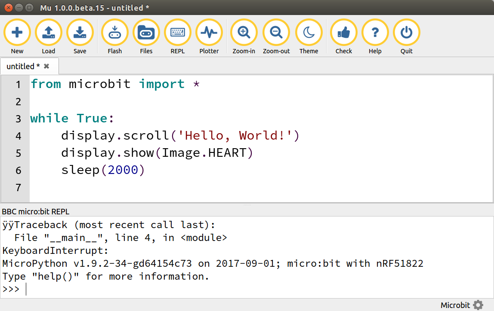

Online MicroPython Editor (EN) je ďaľší online editor, no tento krát je určený pre tvorby MicroPython kódu. Ani pri tomto spôsobe programovania nie je potrebná inštalácia softvéru na počítač či administrátorské práva, stačí prístup na internet a internetový prehliadač.
# Add your Python code here. E.g.
from microbit import *
while True:
display.scroll('Hello, World!')
display.show(Image.HEART)
sleep(2000)
Ako ale zistíme, aké možné obrázky môžeme vykresliť? Na to nám slúži online micro:bit MicroPython dokumentácia, v ktorej je zoznam všetkých príkazov, ktoré je možné použiť.
Mu (čoskoro v SK) je IDE pre písanie MicroPython kódu pre micro:bit, ako aj pre Python3 (skvelá alternatíva k IDLE). Je možné ho stiahnuť a spustiť bez inštalácie, alebo inštalovať pomocou nástroja pip. Pre plnú funkcionalitu je potrebné pri platforme Windows stiahnúť si driver pre micro:bit.
